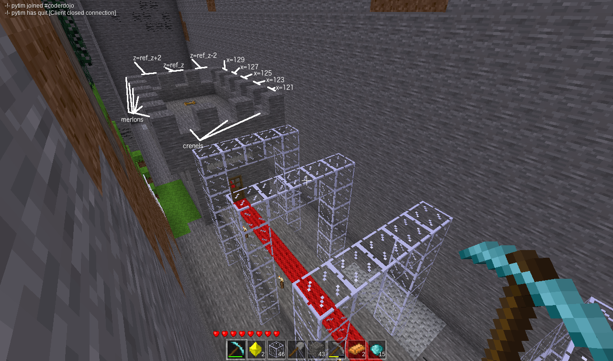

To finish off the castle, add a door at the entrance, crenels on the roof and red carpet under the arches, through the door and to the ladder.
Only the bottom half of a door needs to be placed and the top half will automatically appear. It is important therefore to ensure top space for door is air. Otherwise the door will not be able to move.
The name for a wooden door is "doors:door_wood_a".
The "_a" at the end means the left door of a pair. If the door ended in
"_b" it would be the right door.
Doors also need a "direction" parameter. The direction is the direction the player is
facing when viewing the door. When a player is viewing the door in that direction the
door will be flush with any wall beside it. Possible directions are
"+x", "-x", "+z", "-z". Experiment with different values to find the door direction
you like the best.
The classic castle design has a square tooth wall protecting soldiers in the castle. The gaps between the teeth are called crenels and the soldiers can shoot arrows or fling other projectiles through them. The teeth are called merlons and they protect the soldiers from the attackers. We currently have a solid wall so need to add crenels for soldiers to shoot arrows through. The crenels will be in every second position. We can't have a crenel in the corners because the merlons will obscure them.
See if you can use range() functions to place crenels every second block
on the walls of the roof.
Red wool will make a fitting carpet for your castle.
When you have finished this task you have finished all the tasks in this course.
Well done!